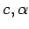

Inhalt Index DeskTop Bronstein

 Geometrie Sphärische Trigonometrie Berechnung sphärischer Dreiecke Rechtwinklig sphärisches Dreieck
Geometrie Sphärische Trigonometrie Berechnung sphärischer Dreiecke Rechtwinklig sphärisches Dreieck


Für Berechnungen in rechtwinklig sphärischen Dreiecken geht man im allgemeinen von 3 gegebenen Größen aus, dem Winkel und zwei weiteren Stücken.

Es ergeben sich dann 6 Grundaufgaben, die in der folgenden Tabelle zusammengestellt sind.
| Grund- aufgabe |
Gegebene Bestimmungsgrößen |
Nummern der Formeln zur Bestim- mung der übrigen Größen |
| 1. | Hypotenuse und eine Kathete c,a |
|
| 2. | Zwei Katheten a, b | |
| 3. | Hypotenuse und ein Winkel  |
a (3.206a), b (3.206f), |
| 4. | Kathete und der anlie- gende Winkel |
c (3.206e), b (3.206j), |
| 5. | Kathete und der gegen- überliegende Winkel |
b (3.206h), c (3.206a), |
| 6. | Zwei Winkel |
a (3.206i), b (3.206j), c (3.206d) |